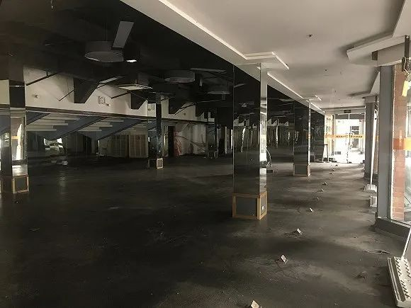
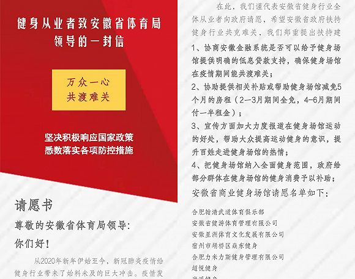

健身行业冰火两重天：线上用户量翻10倍，线下每月损失千万
原文链接 备份链接 图片来源：unsplash 记者：伍洋宇 编辑：文姝琪 “ 健身行业的线上迁徙或许是一个临时逃生出口，但等到豁然开朗时，有几成创业者能伫立到最后？ ” 韩佳至始至终都没有提到最坏的可能，老板告诉她这次必须挺过去。 作为 …

记者 ：李晓庄
编辑 ：石一瑛
“
疫情过去了，但健身行业还需要时间恢复。
”
随着疫情形势的好转，停工近两个月的健身行业逐渐恢复了经营。
3月起，一兆韦德健身、乐刻健身和威尔仕健身在上海的门店陆续开放，随后全国门店开始跟进。
截至3月22日，一兆韦德和威尔仕健身恢复营业的门店数量分别达到85家和73家。
然而，有一些健身机构依然大门紧锁，其中不少将不再开放。
开门不易，等回客流更难
3月17日，上海市体育局发布《新型冠状病毒肺炎疫情期间本市体育场所复工工作指引（第二版）》。根据新版《指引》要求，一般情况下，上海市体育场所向社会开放取消备案，可以直接复工。
此前，金吉鸟健身原定于4月1日恢复营业。但在新版《指引》的影响下，总部决定从上海的20家门店中选出3家，提前到3月20日复工，并观察客流的回归情况。
金吉鸟健身康桥路门店负责人告诉界面新闻，复工这几天的客流量大约只有之前正常情况的四分之一。
复工开门不再困难，但等来客户的回归却需要时间。即使是头部连锁健身品牌，也要面对客流减少的事实。
威尔仕健身上海九六广场店的负责人坦言，在开门初期，会员们对安全有所担忧，前来健身的人不多。门店也不需要太多人手，工作人员采取了轮流上班的制度。
据官方消息，一兆韦德健身上海门店的团课和淋浴将在3月23日开放；威尔仕健身上海门店的团课和泳池也将于同天恢复。
此前，一兆韦德上海徐家汇路店的负责人曾告诉界面新闻：“淋浴和团课取消是客流较少的主要原因，尤其影响到店的女性会员数量。”
目前，广州和深圳等地的健身房已经在3月初有限恢复经营。
以寰图健身房珠江新城店为例，门店的每日营业时间分三个时间段，每个时间段的接待人数控制在35人以内，会员须提前一日预约。
此外，在门店内健身需要全程佩戴口罩，团课人数则控制在6人以内。

3月17日，用户戴着口罩在某健身房内健身。
和大型连锁健身机构不同，部分中小型健身房的经营者，对复工持观望态度。
上海一家小型健身工作室的实际运营人包天青表示，担忧客流量下滑是推迟复工的主要原因。稀少的客流无法增加收入，却产生了额外的水电费和人工费。
包天青所在的这家工作室位于江湾体育场附近，他是这家健身房的合伙人之一，也负责其实际运营管理。
截止3月19日，江湾体育场周边的健身房，仅有一家综合性的健身机构开了门。
走进场馆内，六七十平的场地上只有店长一个人在擦拭器械。门店入口处的登记表显示：在3月19日这一天，前来锻炼的会员还不到两位数。
一名业内人士认为，复工后，整个行业的客流量大约只恢复了30%。
闭店欠薪，巨头也难幸免
3月20日，金吉鸟健身在上海的门店已经陆续复工。根据官方消息，其南京、广州、重庆和杭州等地的门店也将在未来一周内开放。
但在社交媒体平台上，北京、上海、浙江和安徽等地的金吉鸟员工不断发帖留言——截至目前，金吉鸟已经连续三个月没有发放工资，部分门店的员工甚至超过四个月没有领到薪水。
根据金吉鸟健身一名私教的说法，正常情况下，工资在每月18日发放，但从2019年10月份开始，薪水发放的时间就不断被推迟。
2020年初，遇上疫情之后，拖欠工资的情况越加严重。
金吉鸟健身上海康桥路店的负责人表示，员工的工资从2019年12月起就处于未发放状态。由于工资的发放统一由南京总部处理，因此，直到4月1日总部复工前，员工都无法领到工资。
从事健身教练工作已有五年的蒋振龙透露，小型健身工作室因房租压力较小还能够保障底薪的发放，但在规模较大的机构，已有教练因失去收入而转行。
此前，有多位业内人士表示，疫情首先考验的是各健身机构的现金流储备。
作为重资产行业，高租金、高人力成本是线下健身产业的特性。根据规模的大小，各健身机构每月有几十万到百万以上的固定支出。
乐刻运动创始人韩伟此前透露，疫情期间，乐刻单月亏损千万以上，整体亏损预估一亿甚至翻倍。

中体健身常营店贴出的闭店公告。
2月19号，UION Life中体健身北京常营店贴出闭店公告，宣布因收入停滞、无法负担高额房租和各项成本而正式闭店。
据该店销售人员的说法，闭店主要是因为商户没有和物业谈拢房租问题。中体健身则很快开始给会员办理退费等善后事宜。
在停工阶段，私教课程售卖陷入停滞。健身房以会员卡预售和售卖私教课为主要盈利模式。当年卡预售达到饱和时，售卖私教课程是让会员继续付费、获取收入的主要手段。
在这种情况下，传统的超大型健身房如果停工超过三个月，就会有倒闭风险。根据中体数据总经理刘易斯的估算，有20%的企业将受疫情影响倒闭。
不缺少资金，但还要再投入吗？
相比较同行，艰难求生的包天青对自己能撑下来感到庆幸：“一百、两百的钱都要想办法去赚，活下来是最重要的。”
虽然无法开门营业，但通过器材租赁和食品售卖，他在疫情期间每个月能获得近万元收入。这差不多能和店里几个健身教练的工资相抵——在停业期间，教练们每月仅有不到两千的底薪。
也正因此，包天青对未来的预期谨慎乐观，在停业期间，他买进了其他倒闭健身房的二手器械，还是希望自己的健身房能够活下来。
然而，不少健身行业从业者的经营意愿受到了停工的打击。
3月18日，陆臣在网上发布信息，想要转让自己在上海火车站附近的健身工作室。
亲手打理了两年，外加疫情形势的好转，陆臣本希望能够继续经营。但面对即将到期的房租合约，另外一位合伙人却不愿意再投入资金。
会员流失、市场前景不明朗，是他们继续投资的隐忧。
最终，陆臣和合伙人达成统一，决定将健身房尽快转让出手，但转让情况并不乐观。如果无法顺利转让，他将会零散转卖器械，最终停业。
单就健身行业而言，现在这个时间节点上，只有人想着尽快脱身，几乎找不到入局的玩家，行业投资者、行业从业者，和消费者一样，尽可能地小心谨慎。

上海江湾体育场一家停止营业的健身馆，设备已经被全部搬空。
行业再洗牌，先要活下来
跑路、倒闭、转让，这似乎是千疮百孔的健身行业在2019年的关键词。2020年初的情况，又加剧了诸多中小健身房的死去。
部分从业者并不认为这是件坏事。
威尔仕健身市场副总裁戴千焯认为，疫情促进了行业的新陈代谢。他表示，疫情只是使健身机构原本存在的问题爆发，而不是引发问题的根本。
在诸多竞争者倒下的冬天，威尔仕健身依然决定实行自己的扩张计划。据其负责人的说法，在其他行业退出的情况下，新门店将能够获得更好、更优越的地段。
2020年3月上旬，私教健身工作室人马线和团课健身房Justin&Julie Fitness相继传出完成千万级别A轮融资的消息。
但活下来、甚至活得好的，只是极少数人。
2019年，拥有20年历史的知名连锁品牌浩沙一夜崩盘。疫情来袭后，健身房倒闭的情况更是数见不鲜。
包天青加入了一个健身行业信息交流群，在因疫情停业的时间内，仅上海地区，就有超过百名闭店的健身房业主在此发布器材或门店转让信息。
在上海江湾体育场经营着一家小型健身工作室的高吉说：“今年冬天比以往更冷了，没有存粮的机构就会死。但有一些机构本可以活下来，也不该倒闭的。”
上海江湾体育场附近，有一家经营了近十二年、占地三千五百平的综合健身房。和它毗邻而居的则是数家主打拳击、瑜伽和舞蹈等特色项目的小型工作室。
3月11日和3月14日，这家场馆连续张贴两条公告，宣布因疫情影响和经营困难而停止营业，会员会籍可转入另外两家愿意接收的健身场馆。
高吉对这一健身房的倒闭感到遗憾——他将自己和商区内其他从业者视为互补关系，区域内巨头的倒下，会对整个生态造成破坏。
疫情之下，各地体育局都在尽力帮助这些中小型健身机构。
上海市体育局在2月21日发布了《关于全力支持本市体育企业抗疫情稳发展的通知》，其中要求对承租市属公共体育场馆的非国有中小体育企业，免收2月、3月两个月的租金。
据上海的部分健身行业商户反映，虽然收到减免通知，但在同物业交涉具体方案时，出现了申请被忽略或减免时间被压缩的情况。

安徽省健身行业从业者的请愿信。
3月初，安徽省近250家商业健身场馆集体向安徽省体育局致信，希望政府能够协助提供相关补贴或帮助减免租金。
合肥市某健身场馆负责人江土新告诉界面新闻，最根本、最现实的因素就是钱。以万元为单位的房租减免，将影响一个门店的生死。
此外，由于同时经营了水疗馆，江土新更看重政策背后传达出的信息，“或许最后减免的金额并不算多，但有没有政策的支持，这将会影响到我的决策。业务方向要不要调整、店面要不要扩张、甚至怎么招新员工，这些都会有变化。”
难变现的云健身，还要依托线下
健身行业在寻找自救的方法。
疫情爆发后不久，1月30日，国家体育总局发布《关于大力推广居家科学健身方法的通知》，要求利用各类媒体促进居家健身。
几乎是同时，各家健身机构及在线健身平台纷纷上线了健身视频和互动直播。
1月底，乐刻先后在快手、抖音、腾讯视频和西瓜视频等平台上线运动话题；随后，线上运动平台Keep联合趁早app、Shape塑健身等品牌共同推出了直播专栏。
一兆韦德和威尔士健身等传统健身品牌首次开通了线上课程；不知名的小型工作室和普通健身教练也尝试把课程搬到线上。
一兆韦德健身在抖音上传健身视频。
闲居在家的人群为“云健身”带来了巨大的流量。据统计，不到一个月的时间，乐刻相关健身话题流量全网突破20亿，平均单平台观看人数在2万左右，峰值可达到6万。
求生的本能迫使线下健身行业紧紧抓住这根稻草。然而，线上健身的巨大流量难以转换为盈利，观众的狂热没有驱散行业的寒冬。
乐刻运动创始人韩伟说：“既做流量，又赚钱，这不成立，这个链条不是一夜之间就起来的。”
超级猩猩创始人跳跳则公开表示，线上直播首要考虑的不是盈利，而是给健身用户交付价值。线上课程只是在特殊时间段对线下服务的一个补充，本质上无法代替线下课程。
疫情使线上消费受到了传统健身行业的关注。韩伟称，乐刻原本就有推出在线服务的计划，疫情则使这一想法提前实现。
同时，威尔仕方面也表示，客户已经培养了线上的消费习惯，未来线上将承担更多的职责。
对于未来，健身行业业内人士的观点出奇地一致：线下仍是最好的健身场景，但线上、线下打通，将成为健身行业的新方向。
未经授权 禁止转载

原文链接 备份链接 图片来源：unsplash 记者：伍洋宇 编辑：文姝琪 “ 健身行业的线上迁徙或许是一个临时逃生出口，但等到豁然开朗时，有几成创业者能伫立到最后？ ” 韩佳至始至终都没有提到最坏的可能，老板告诉她这次必须挺过去。 作为 …
原文链接 备份链接 新冠病毒的疫情牵动着全国上下每个人的心，从前不久的桌游行业的义卖活动能看到桌游行业也在为这场抗疫之战而尽力。不过，这场突如其来且无法预料的疫情的确给我们的生活带来了很多问题，甚至让很多行业在承受着每天不断增加的损失，这 …
原文链接 备份链接 图片来源：横店影视城官方微博 记者 ：刘燕秋 “ 种种困境让这个行业过往的积弊都浮现了出来，但在困境中也不乏影视新势力带来的机遇。 ” 横店复工模式难复制 “我们复工的话可能要到2月底了，返回横店的离组员工还要隔离一段 …
原文链接 备份链接 记者/ 杨宝璐 编辑/ 宋建华 武汉街头已能看到少量的行人、车辆 回到武汉，开车上三环，刘凯朝窗外看了一眼，瞬间差点没忍住情绪。“路上就一个穿防护服的，应该是个医护人员，我真是除了在凌晨两三点，没见过这样的武汉。” 在 …
原文链接 备份链接 【财新网】（实习记者 黄雨馨）新冠肺炎疫情趋于稳定，复工复产也逐渐展开。然而由于各地各自为政，加之初期政策缺乏可操作性，湖北人的复工之路并不顺畅。 乐维滞留哈尔滨快两个月了。他是湖北人，在北京一家文艺单位有一份稳定的工 …